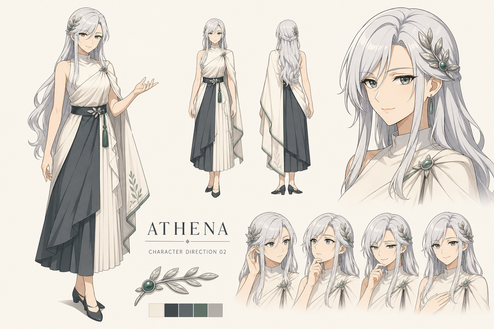

Athena智慧 · 清醒 · 亲近
Aa有自己的判断。
日光与夜色
共享一种秩序
共享一种秩序
一套品牌，两种光照。
背景和阅读面建立层次，矿物绿标记主要操作。更换空间或人格，都沿用同一套色彩语义。
背景
阅读面
文字
交互绿
银色细节
内容安静，操作清楚。
下面是可操作的设计样例，不连接模型。切换空间、主题和状态，检查它们是否仍属于同一个 Athena。
Athena视觉组件样例
Athena · 产品交互示例
从你正在想的事情开始。
不必一次说完整，我们可以一起把它理清楚。
读得清楚，
才能想得深入。
品牌标题用有文化气质的衬线字体，产品正文用清楚的系统字体。长文有稳定行宽，说明文字保持可读。
标题 32正文 15辅助 12
共同的组件规则
- 4px
- 基础间距单位；常用 8、12、16、24、32
- 10 / 18 / 24
- 控件、面板与输入框的圆角
- 120 / 220 / 360
- 反馈、过渡与面板的动效时长，单位 ms
- 静止优先
- 空闲无循环；减少动态效果时取消位移
雅典娜，二次元的智慧女神。
银白长发、叶形银饰与克制的古典垂褶。角色的象牙白、石墨灰和矿物绿，与界面的颜色彼此呼应。

Athena 产品品牌
应用名称、导航、色彩和控件构成稳定外壳。
持续保留雅典娜主 IP
二次元智慧女神；有判断力、亲近、清醒。具体面部与服装仍在探索。
新概念待评审苏时夏等独立人格
名字与形象独立，身份清楚，使用同一套产品界面。
保持独立